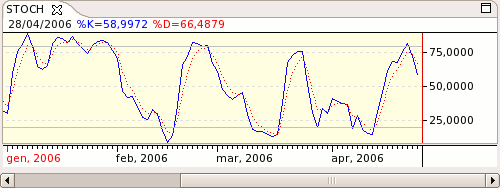

Stochastic - STOCH

Parameters
- Name: The text that identifies the indicator
- Color: Indicator's color
- Selected Periods: RSI period
- %D Smoothing Period: The period used for the %D smoothing
- %K Smoothing Period: The period used for the %K smoothing
- Smoothing Average Type: The type of Moving Average to use
- Buy Signal Threshold: Buy line signal threshold
- Sell Signal Threshold: Sell line signal threshold